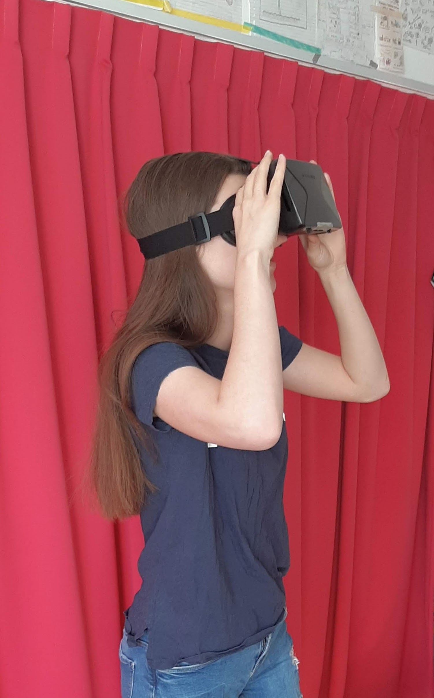
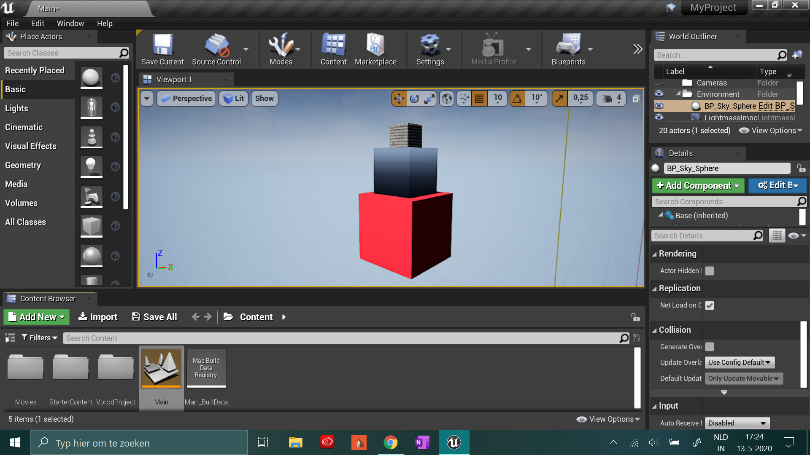
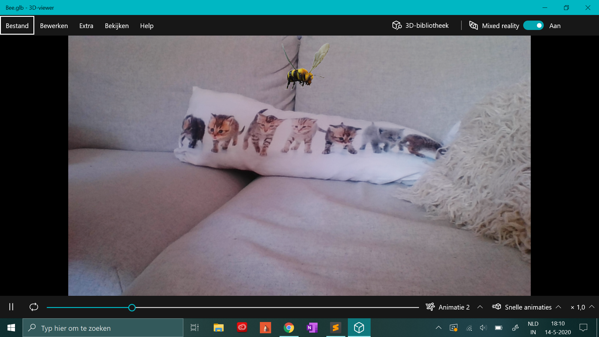
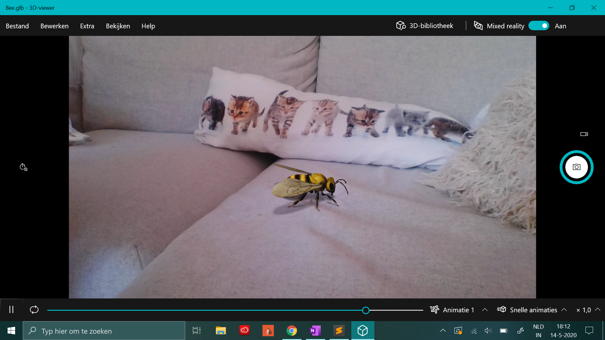

AR & VR
Onderzoek
Om te beginnen met dit onderwerp wilde ik, na het zien van de veelbelovende voorbeelden, zelf eens VR proberen. AR heb ik vaker gezien (o.a. Pokemon Go en Snapchat), dus ik was heet meest nieuwschierig naar VR. Ik heb een VR bril die ik ben gaan testen door VR 360° filmpjes te bekijken op youtube. Dit was erg leuk, ik vond vooral de reisfilmpjes leuk waarin je bijvoorbeeld rond kon kijken in Australie. Ook heb ik een echte VR film gevonden met geanimeerde beestjes. Ik vond het leuk dat dit een VR experience met een verhallijn was.
Toen ik VR en AR zelf uitgetest had ben ik op zoek gegeaan naar inspirerende VR projecten. Dit heb ik gedaan op Behance. Ik heb vier projecten gevonden die mij op verschillende manieren aanspreken:
Improved airport experience through AR
Adrián Řezníček, Stanislav Bagin Lukas Stranak en PLATFORM Agency
Dit project is gemaakt omdat mensen vaak gestresd zijn op viegvelden. Met de app willen ze het makkelijker maken om van de ingang van het vliegveld tot aan de bestemming te komen. Dit doen ze met AR.
Dit project spreekt me aan omdat ik vind dat ze de kwaliteiten van AR goed gebruiken. Het is voor mij heel herkenbaar dat het op de kaart niet duidelijk is welke kant je op moet. Doordat je met AR de weg die je moet nemen in de echte context ziet, is dit veel duidelijker. Ook vind ik dat ze heel user-centred te werk zijn gegaan. Het desig is simpel en duidelijk. Als gebruiker zie je alleen wat je op dat moment nodig hebt (navigatie,inchecken enz. niet tegelijk).
Singularity VR Experience
Relajaelcoco studio
Singularity is een VR motion graphic experience. Het is een soort film met als thema de evolutie van een wezen.
Het design vind ik in dit project erg mooi, daardoor trok het meteen mijn aandacht. Ik vind het gebruik van 2d en 3d vormen in dit project interessant. Ook de verhaallijn spreekt mij aan, ik werd helmaal meegesleept in het verhaal. Soms werd ik wel een beetje misselijk van de snel bewegende vormen en kleuren.
Two avant-garde artists in three dimensions
Dima Neiaglov, Maxim Goudin, Illarion Gordon en Airborneape Studio
In dit project hebben ze een digitaal alttelier gemaakt waarin je schilderijen kan maken.
Bij dit project was ik onder de indruk van interactie. Je kan dingenen oppakken en verplaatsten. Ik vind de omgeving er gedetaliieerd uitzien. Het onderwerp kunst spreekt mij ook aan.
AR\VR Realty
Oksana Romanovskaya
In dit project word er gekeken naar de mogelijkheoden van AR en VR in vastgoed. Je kan met je telefoon rondkijken en informatie over verschillende gebouwen zien. Met VR kan een ronje lopen door het gebouw.
Dit project spreekt met aan omdat het effectief gebruikt maakt van AR en VR. De app gebruiken is veel makkelijker dan een gebouw opzoeken voor informatie of een afspraak maken om een gebouw van binnen te bekijken. Ook is er goed nagedacht over het design.
Na het onderzoek naar VR en AR projecten ben ik gaan kijken naar software die je kan gebruiken om VR en AR experiences mee te maken. Ik heb na Unreal Engine gekeken naar Adobe Dimention en Adobe Aero, Google ARCore en Micosoft 3D viewer.
Experimenteren
Omdat ik erg niewschierig was naar het zware progamma dat we moesten downloaden voor de les, heb ik Unreal Engine voor de les al geopend en gekeken wat je ermee kan doen. Na een korte uitleg een heel wat puzzelen heb ik het voor elkaar gekregen om drie vierkantjes van verschillende formaten op elkaar te stapelen in een VR envoirement. Dit is mijn eerste experiment. `
 Ik heb ook geexperimenteerd met AR in Micosoft 3D viewer.